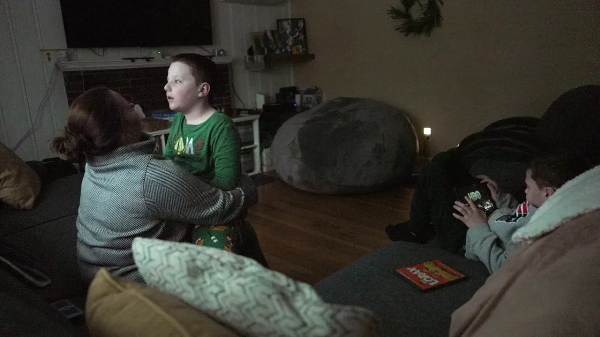

Breaking News
 Feb 17
Feb 17
by Reid Ashton
Raising Twins With Profound Autism as Calls Grow for New Diagnosis
A family raising twins with profound autism shares their daily challenges as experts and advocates debate creating a separate diagnosis for severe autism.
As debate grows in the United States over recognizing “profound autism” as a distinct medical category, one family’s experience raising twins with severe support needs is drawing national attention. Advocates, clinicians, and caregivers say individuals with the most significant challenges related to Autism Spectrum Disorder often require lifelong, intensive care that is not fully reflected in the current diagnostic framework. The family’s story highlights both the daily realities of profound disability and the broader policy discussion shaping autism services across the country.
A Family’s Daily Life With Profound Autism
The twins' parents keep a close eye on them all day, follow strict schedules, and give them special therapy. Because they can't talk, both kids need help with everyday things like taking care of themselves, staying safe, and getting along with others. The family talks about how dealing with behavioral problems, going to the doctor, and making plans for school can be hard on their emotions and their wallets. They are in the same boat as many American families with kids who need a lot of help.
What Advocates Mean by “Profound Autism”
Some academics and advocacy groups call people who are mute or barely speak, have a major intellectual disability, and need help all the time "profound autism." Advocates say that legislators would better understand the need for services if they saw this group as separate from the larger autism spectrum. They say that better classification would make it easier to get long-term funding, options for residential care, and specialized education programs. The classification could also help with data collection, which would help public health groups better understand the needs of this group of people across the country. Families and caregivers say that formal recognition would bring attention to the intensive, lifelong care that many people need, especially as they become adults. Advocates also believe that raising awareness would lead to more federal funding for research and speed up the development of long-term care solutions, caregiver support programs, and personalized medications.
The Debate Within the Medical Community
Professionals disagree on whether a separate diagnosis is necessary. Some medical professionals are worried that a new name could unintentionally split the autistic community or make them feel bad about themselves. Some people say that one group could make a very complicated and different illness too simple. Numerous experts assert that severity levels and support classes for autism spectrum disorder are already integrated into the existing framework and can be employed to tailor care without necessitating a new diagnosis. But a lot of experts agree that current data systems don't always do a good job of showing what people with the most severe disabilities need. They say that inconsistent documentation of severity could make it hard to plan for staff needs, figure out how much service is needed, and distribute public funds.
Medical organizations and federal health agencies are continuing to review clinical evidence, patient outcomes, and service gaps as part of the discussion. The debate reflects a broader challenge: balancing diagnostic precision and scientific accuracy with the practical goal of improving access to care, resources, and long-term support for individuals and families across the United States.
Why the Issue Matters for U.S. Families
The outcome of this discussion could have a direct effect on how services are provided all over the country. Families often have to wait a long time for therapy, don't have enough insurance, and can't find qualified care providers. Supporters say that learning more about severe autism may help direct resources to the people who need them most, especially as kids get older and need help all the time.
Outlook: What’s Next in the U.S.
As more data becomes available and advocacy groups try to alter laws, the debate over severe autism is probably going to continue. The tracking and funding of severity levels in education, healthcare, and disability programs may be examined by federal and state agencies. Facilitating access to high-quality services, providing additional support to caregivers, and ensuring long-term planning for individuals with the most complicated autism-related requirements will probably remain the primary objectives in the years to come.
Reid Ashton is a U.S. health news reporter covering medical policy, public health trends, and breakthrough scientific developments.